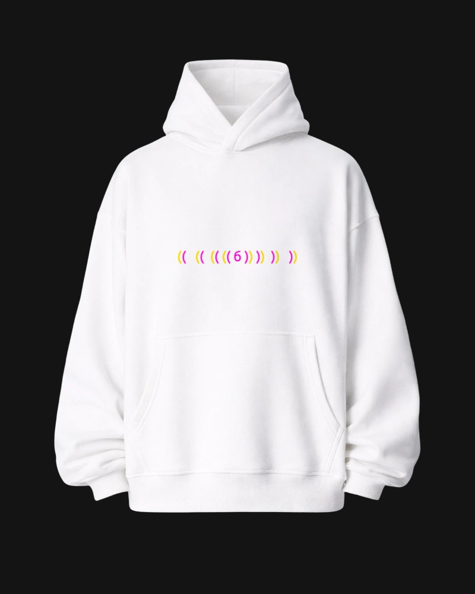
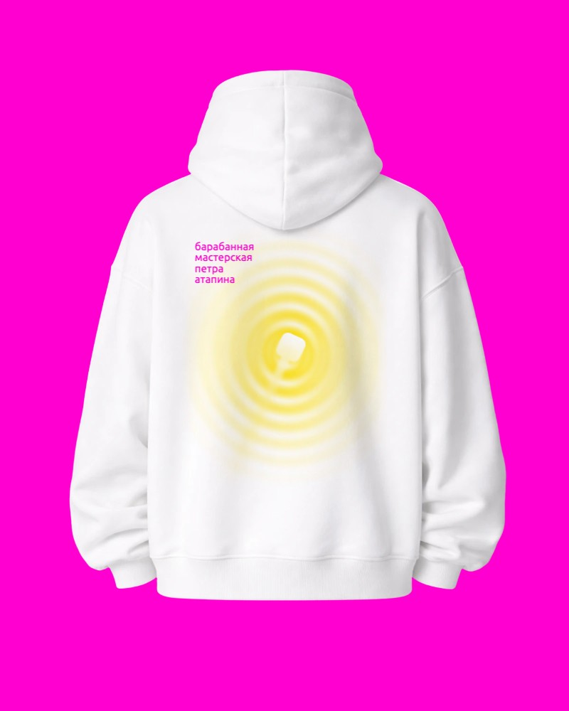
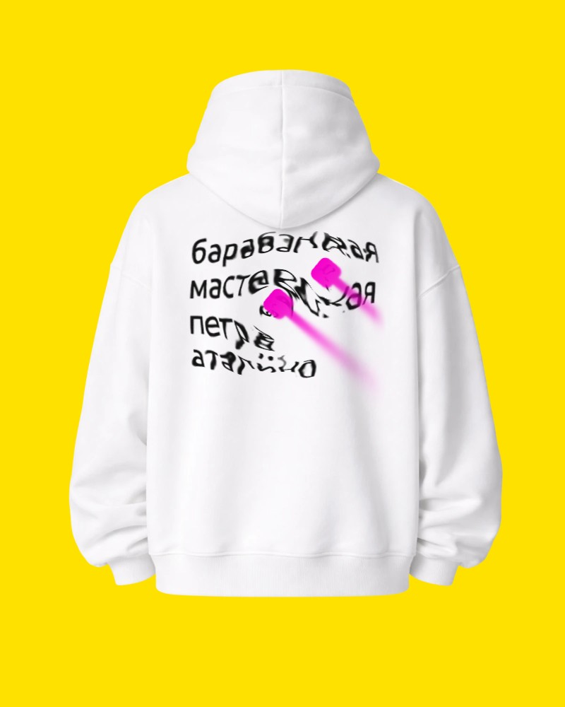
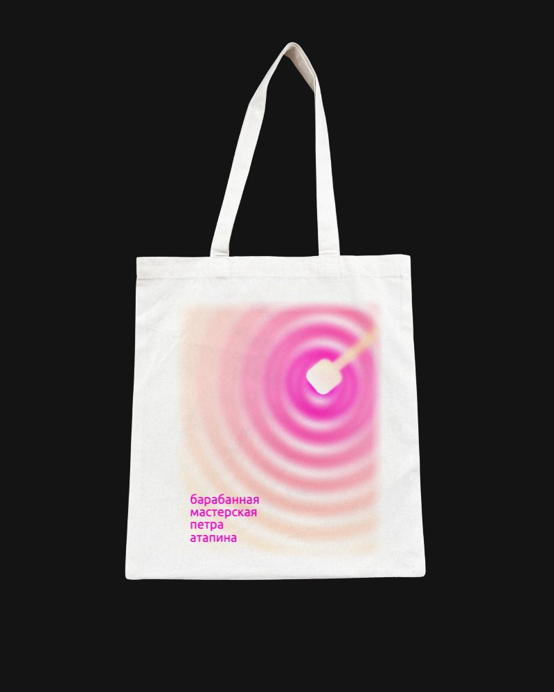

барабанная мастерская петра атапина
Бренд построен на одном моменте — ударе по бубну. От точки удара расходятся кольца: плотные и яркие у центра, реже и прозрачнее к краю. Тот же ритм повторяет лого.
Цвет
Два фирменных цвета — розовый и жёлтый — плюс белый и тёмный для текста. Объём и свет строятся только ими: тёплый жёлтый на свету, холодный розовый в тени.
нельзя серые и чёрные тени, затемнение для объёма
палитра
rgb 255 0 208
rgb 255 225 0
rgb 255 255 255
только текст и лого
Оранжевый — не отдельный цвет: он появляется только внутри градиента колец, на стыке розового и жёлтого.
нельзя тёмный #141414 как фон или как цвет колец
сочетания
Фон определяет всё остальное: какой градиент колец, каким цветом текст и лого.
нельзя розовые кольца на розовом фоне — на розовом только жёлтые
Лого
Знак ( б ) и скобки вокруг — те же кольца волны, набранные текстом. Пробелы есть и внутри, вокруг б, — так скобки читаются окружностью бубна. Шрифт Ubuntu Regular.
нельзя прозрачность и затухание скобок
правило
нельзя одинаковые промежутки
уровни
От ядра ( б ) до трёх пар скобок вокруг. Основной вариант — одна пара: ( ( б ) ). Больше скобок — когда нужно показать волну шире, меньше — когда мало места.
слова
Лого и название всегда пишутся со строчной — мы простые дружелюбные ребята. Вместо б в скобки можно поставить слово целиком, правило пробелов то же.
Без скобок — словесные знаки. Строки ломаются только по словам, выключка влево.
Строчные — часть характера: не вывеска, а разговор.
нельзя заглавные буквы и капслок
характер
Лого держится на ритме — скобки и растущие пробелы, — а не на шрифте. Поэтому шрифт можно менять под характер события (фестиваль, специальный ивент), и знак останется узнаваемым. Даже набранный руками в мессенджере.
Основной шрифт — Ubuntu Regular. Другой шрифт — для особых поводов. Неизменно только правило пробелов.
цвет
Один цвет — одиночные скобки через пробелы. Основной вариант. Два цвета — двойные скобки: (( (( б )) )), в каждой двойке дальняя от б скобка жёлтая.
нельзя двойные скобки в одном цвете
Кольца
Волна от удара. Кольца — это радиальный градиент с чередованием цвета и прозрачности, положенный дважды с маленьким сдвигом. Отсюда объём: волна кажется живой, а не нарисованной циркулем.
Подобрать кольца вживую: открыть настройку колец. Белый фон, розовый и фото рядом, все ползунки.
цвет колец
Два градиента с одинаковой структурой — по умолчанию 8 колец через каждые 12,5 % радиуса, непрозрачность пиков 1 → 0,78 → 0,59 → 0,42 → 0,28 → 0,17 → 0,09 → 0,03. Меняется только цвет — под фон.
нельзя розовый градиент на розовом фоне — волна пропадает
сборка
Одна копия градиента выглядит как мишень. Вторая такая же копия кладётся сверху со сдвигом меньше шага кольца — и кольца становятся волной.
Стандарт: размер 0,6, фаза 0,23, сдвиг 0,061, мягкость 1,35.
нельзя большой сдвиг без мягкости — кольца двоятся
нельзя сплющивать кольца, добавлять перспективу, смаз по одной оси
количество и размер
Колец бывает от 3 до 20. Зазор между ними не меняется: больше колец — шире волна, а не плотнее. Размер меняет зазор и вместе с ним колотушку.
нельзя сжимать кольца ради количества — зазор держит ритм бренда
только искажение
Кольца могут быть без цвета: остаётся одна волна, которая гнёт текст и фото. Тогда главный — текст, а удар видно по тому, как он его ломает. Силу искажения можно поднять в 4 раза.
Цвет колец (в цвете или только искажение) общий для всех ударов поста.
на фото и тексте
Кольца работают на любой поверхности. Поле колец — это UV-карта: фото и текст ремапятся вдоль радиуса (волна их корёжит), сверху ложится градиент.
Искажение сильнее у центра удара и затухает к краю. Слово в центре может стать почти нечитаемым — это нормально для акцента, но не для информации: даты и адреса держи дальше от удара.
нельзя серые и чёрные тени — объём только жёлтым и розовым
Колотушка
То, чем бьют по бубну. Колотушка показывает сам момент удара: голова там, откуда идут кольца, ручка уходит за край кадра.
Колотушка необязательна: волна и лого работают и без неё.
форма
Один цельный шейп: скруглённая квадратная голова и ручка — одна форма с одним градиентом. Голова — 12 % ширины кадра, ручка — 4 %.
нельзя голова и ручка разными формами или разными цветами
градиент
Градиент начинается прямо от края головы и уходит в прозрачность к концу ручки.
На белом: розово-жёлтая, бело-жёлтая, белая. На розовом: розовая, розово-жёлтая, бело-жёлтая. На фото: белая, розово-жёлтая, бело-жёлтая.
Если ударов несколько, цвет колотушек у всех один.
нельзя сплошная заливка без прозрачности
блюр
Прогрессивный: голова чёткая, ручка размывается всё сильнее к концу — как смаз от движения.
нельзя без блюра — колотушка выглядит наклейкой
нельзя одинаковый блюр по всей длине, размытая голова
положение
Голова всегда в центре удара — там, откуда расходятся кольца. Сам удар может быть где угодно в кадре, ударов может быть несколько (до шести), у каждого своя колотушка, ручка смотрит в любую сторону.
Ручка всегда уходит за край кадра — конец колотушки не виден.
нельзя голова колотушки вне центра колец
Движение
Пост живёт как короткий клип: каждый удар случается один раз, в свой момент. Статичная картинка — это последний кадр, когда волна осталась.
По умолчанию клип 5 секунд, играет один раз, волна остаётся.
удар
Колотушка прилетает от зрителя — из большой и размытой в резкую — за 0,13 с, бьёт, держится 0,15 с и уезжает вдоль ручки, чуть увеличиваясь и размываясь. В момент удара поверхность коротко вздрагивает.
нельзя отскок колотушки — удар один, чистый
волна
Первым уходит одно сильное оранжевое кольцо, чуть быстрее остальных. Через 0,13 с за ним из центра выходит остальная волна. Все кольца бледнеют с расстоянием одинаково.
Два режима: волна остаётся картинкой (по умолчанию) или уходит за край, и пост снова чистый.
нельзя поток волн по кругу — волна от удара одна
таймлайн
Под постом — таймлайн: отметка на каждый удар, их двигают по времени. Длина клипа от 1 до 20 секунд. Видео сохраняется в MP4 целиком, картинка в PNG — в 2× размере.
Несколько ударов подряд с паузой 0,5–1 с читаются как ритм — это барабан.
Примеры
Как это собирается в реальных носителях.
инстаграм
Аватар — волна с колотушкой, без текста: в кружке читается и в 40 px.
Имя профиля — основное лого со словом: ( ( барабанная ) ).
В сетке чередуй фон: розовый, фото, белый — так лента дышит.
карусель
Соседние посты склеиваются замочком: у них общий фон, фото и удары — кольца и колотушка переходят через стык. Текст и лого у каждого поста свои, сохраняются они отдельно.
Удар на стыке листается как один кадр — так карусель держится вместе.
нельзя разные фоны у склеенных постов
мерч
Белые худи и шопперы: те же кольца, колотушка и лого, что в постах. Сделать свой — на странице мерча.



